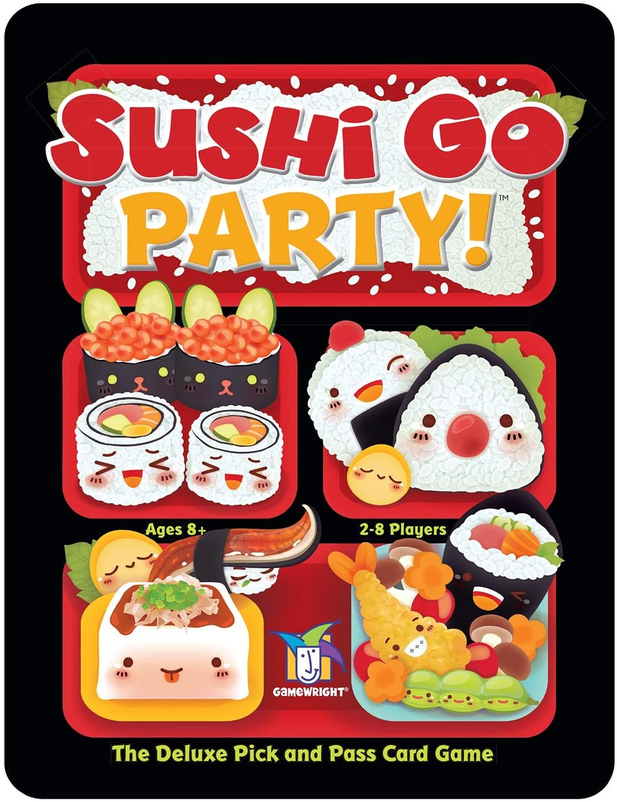

$55.00
Catan - An award-winning strategy game where players collect resources and use them to build roads, settlements and cities on their way to victory.
The board itself is variable, making each game a little different from the next.

$120.00
Fury of Dracula – A Game of Deduction and Horror!
The Count has returned!
Eight years ago, a small band of God-fearing people stopped Count Dracula. Or so they thought…
Play as Count Dracula and claim dominion over the night as you sire new vampires, lay traps,
and lead your enemies on a wild-goose chase. However, some will prefer to play as the Hunters determined to put a stop to the wicked count and destroy him!

$21.95
It's a party platter of Mega Maki, Super sashimi, and endless edamame in this expanded version of the best-selling card game.
You still earn points by picking winning sushi combos, but now you can customize each game by choosing a La carte from a menu of more than 20 delectable dishes.